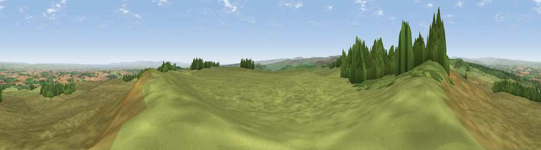

Viewpoint near Gayles
#5368 in England · top 3% of its area beats it · near GaylesWhere it is
The exact computed spot (NZ 11125 05525). Click the marker for map links.
The view, rendered

A 360° render of this exact spot computed from the terrain model, tree cover and land cover — summer colours, afternoon light, calibrated against photographs of famous viewpoints. Real trees, hedges and buildings will differ in detail.
The panorama
Grey silhouette: terrain skyline in each direction (720 bearings, Earth curvature and refraction included). Dashed green: skyline with trees (+15 m) and buildings (+8 m) as obstacles. Blue strip: how far the ground is visible on each bearing.
Where the view opens
Wedge length = distance to the farthest visible ground on that bearing (vegetation-aware). Rings at 10, 25 and 50 km.
What fills the view
81% grassland · 10% woodland · 8% cropland ·
Angular shares of the visible panorama (visual magnitude), not map area. Landscape diversity 0.28 (0–1 Shannon).
Key numbers
More beautiful places nearby
The staircase of upgrades: each row has a higher view potential than everything closer. Driving times are estimates from straight-line distance, calibrated against real road routing — check an actual route before setting out.
| Place | Direction | Drive | Score |
|---|---|---|---|
| Viewpoint near Kirby Hill | E · 3 km | ~7 min | 70.4 |
| Viewpoint near Gilling West | E · 5 km | ~11 min | 71.9 |
| Viewpoint near Barningham | WNW · 8 km | ~16 min | 72.7 |
| Viewpoint near Barningham | WNW · 8 km | ~16 min | 74.1 |
| Viewpoint near West Witton | SSW · 20 km | ~33 min | 75.6 |
| Viewpoint near East Witton | S · 21 km | ~35 min | 77.8 |
| Viewpoint near Ingleby Cross | E · 35 km | ~53 min | 78.8 |
| Beacon Hill | E · 35 km | ~54 min | 84.7 |
54.44501, -1.82996 · source: screening · position refined by local search. Computed location — check access rights before visiting.